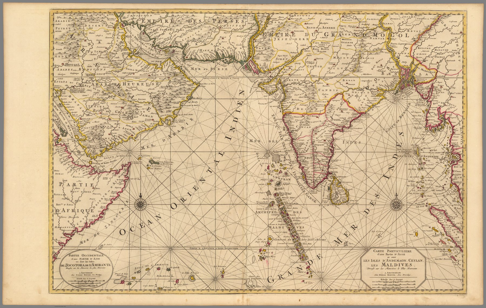

← Baroque Mughals and Companies

A transnational atlas object
Pierre Mortier first issued this chart in 1700 in his Suite du Neptune François, claiming the charts of Portuguese pilots as his source, and bound it again into his 1708 Amsterdam edition of Jaillot’s Atlas Nouveau. The sheet belongs to no single nation.
The maritime region
The sheet foregrounds the islands and waters through which traffic moved: Ceylon, the Maldives, the Andamans and the surrounding seas. At this scale, maritime geography becomes a region in its own right.
Authority through enlargement
Mortier’s large-format atlases turned borrowed source maps into imposing commercial plates. Scale, engraving and presentation amplify authority even where the underlying geography remains derivative. The map is an artefact of publishing competition as much as of geographical observation.
The gaze
Ceylon, the Maldives and the Andamans hold the centre and the subcontinent is pushed to the margin. For a Dutch publisher selling to French buyers on Portuguese information, the valuable India was the one ships had to thread through, and Mortier enlarged it to match its price.